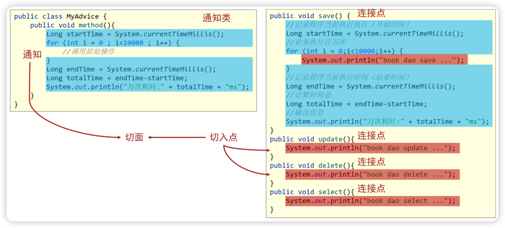
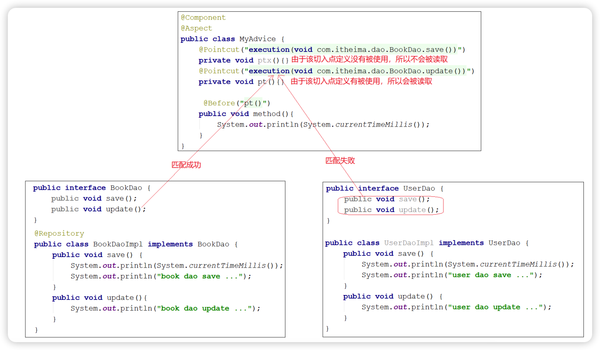
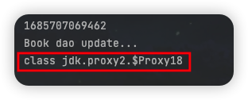
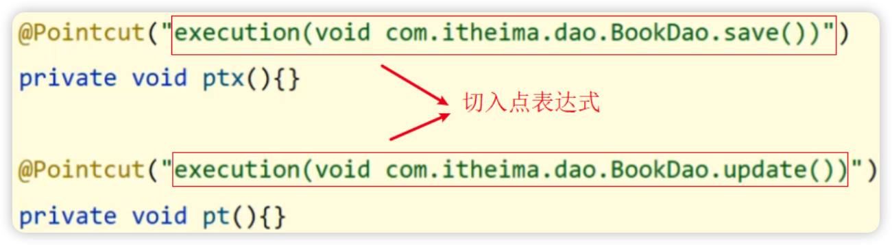
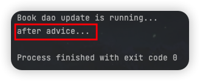
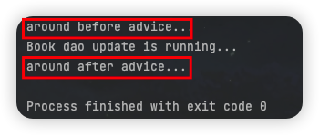
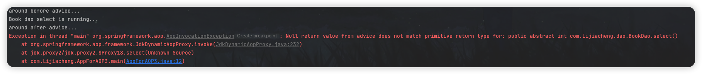
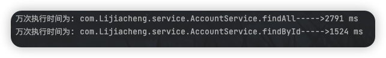
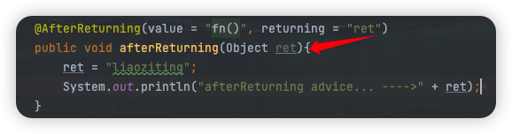
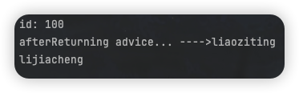

前面对Spring介绍时说过，Spring有两个核心的概念，一个是IOC/DI，另一个就是AOP。接下来要学习AOP了，AOP总的来说就是在不改变原有代码的前提下对其进行增强。
AOP简介
什么是AOP
AOP(Aspect Oriented Programming)面向切面编程，是一种编程范式，指导开发者组织程序结构。（熟知的oop也是一种编程范式）
AOP作用
在不惊动原始设计的基础上为其进行功能增强。（前面有技术可以实现这样的功能，即代理模式）
AOP核心概念
Spring的AOP的核心就是在不改动原始代码的前提下，想给谁添加功能就给谁添加，这个也是Spring的理念：无侵入式。
那Spring是如何做到的呢？

连接点：Spring的AOP是对一个类的方法在不进行任何修改前提下进行增强。对于save, update, delete, select方法，叫做连接点。
切入点：update和delete只有打印没有计算万次执行消耗时间，但是在运行的时候已经有该功能；那也就是说update和delete方法都已经被增强，所以对于需要增强的方法我们给起了一个名字叫切入点（匹配连接点进行数据增强的式子）。
通知：执行update和delete方法时都被添加了一个计算执行万次消耗时间的功能，将这个功能抽取到一个方法中，也就是一个存放共性功能的方法中，我们叫这个方法为通知（在切入点处执行的操作）；方法存在的类叫做通知类。
切面：通知是要增强的内容，会有多个，切入点是需要被增强的方法，也会有多个，那哪个切入点需要添加哪个通知，需要对通知和切入点的关系有一个明确的描述，这个关系描述我们叫做切面。
AOP入门案例
需求分析：使用SpringAOP的注解方式完成在方法执行前打印出系统当前时间。
AOP操作思路
1、导入坐标（pom.xml）
2、制作连接点（原始操作，比如Dao接口和实现类）
3、制作共性功能（通知类与通知）
4、定义切入点（那些连接点需要被增强）
5、绑定切入点和通知的关系（切面）
AOP实现步骤
导入
spring和aspectj依赖坐标aop依赖是spring的子包，所以不需要单独导入了。
1
2
3
4
5
6
7
8
9
10
11
12<dependencies>
<dependency>
<groupId>org.springframework</groupId>
<artifactId>spring-context</artifactId>
<version>6.0.6</version>
</dependency>
<dependency>
<groupId>org.aspectj</groupId>
<artifactId>aspectjweaver</artifactId>
<version>1.9.19</version>
</dependency>
</dependencies>制作连接点——添加Dao接口和Impl实现类
1
2
3
4
5
6
7
8
9
10
11
12
13
14
15
16public interface BookDao {
public void save();
public void update();
}
public class BookDaoImpl implements BookDao {
public void save(){
System.out.println(System.currentTimeMillis());
System.out.println("Book dao save...");
}
public void update() {
System.out.println("Book dao upodate...");
}
}创建SpringConfig配置类和App主程序运行类
定义通知类和通知
通知就是将共性功能抽取出来形成的方法，类名和方法名都自定义。
1
2
3
4
5
6public class MyAdvice {
// 将共性抽取出来形成的方法
public void method(){
System.out.println(System.currentTimeMillis());
}
}定义切入点（连接点中的哪些方法需要增强）
我们要增强连接点中的update方法：
1
2
3
4
5
6
7
8
9
10public class MyAdvice {
/* ======================================================== */
private void fn(){}
/* ======================================================== */
// 将共性抽取出来形成的方法
public void method(){
System.out.println(System.currentTimeMillis());
}
}
① 切入点定义依托一个不具有实际意义的方法（无参数、无返回值、方法体无逻辑）进行；
② Pointcut后面execution内的内容，是连接点的返回值+具体的连接点方法。
制作切面（切面用来描述通知和切入点之间的联系）
指定通知添加到原始连接点的具体执行位置。
1
2
3
4
5
6
7
8
9
10
11public class MyAdvice {
private void fn(){}
/* ======================================================== */
// 通知会在切入点方法执行之前执行
/* ======================================================== */
// 将共性抽取出来形成的方法
public void method(){
System.out.println(System.currentTimeMillis());
}
}将通知类配给容器并标识其为切面类
将通知类通过
@Component注释配置为一个Bean；再通过@Aspect注释将其配置为可以使用AOP的通知类。1
2
3
4
public class MyAdvice {
}开启注释格式AOP功能（
@EnableAspectJAutoProxy）1
2
3
4
5
// 默认会扫描该类所在的包下所有的配置类
// 配置类中开启AOP功能
public class SpringConfig {
}运行程序
1
2
3
4
5
6
7public class AppForAOP {
public static void main(String[] args) {
AnnotationConfigApplicationContext ctx = new AnnotationConfigApplicationContext(SpringConfig.class);
BookDao bookDao = ctx.getBean(BookDao.class);
bookDao.update();
}
}发现在执行update方法前打印了系统的时间戳，说明对原始update方法进行了功能增强，AOP编程成功。
AOP总结
1、配置类注解@EnableAspectJAutoProxy：开启注释格式的AOP功能；
2、通知类注解@Aspect：设置当前类为AOP切面类；
3、切入点方法注解@Pointcut，设置切入点方法；
4、通知方法注解@Before，设置当前通知方法与切入点之间的绑定关系。
AOP工作流程
由于AOP是基于Spring容器管理的bean做的增强，所以整个工作过程需要从Spring加载bean说起。
AOP流程
- 流程1：Spring容器启动
容器启动就需要去加载bean：像需要被增强的类、通知类等都需要被加载。（此时bean对象还没有被创建成功）
流程2：读取所有切面配置中的切入点
1
2
3
4
5
6
7
8
9
10
11
12
13
14
public class MyAdvice {
private void fnx(){}
private void fn(){}
public void method(){
System.out.println(System.currentTimeMillis());
}
}上述代码有两个切入点的配置，但是第一个
fnx()并没有被使用，所以不会被读取。流程3：初始化bean
判定bean对应的类中的方法是否匹配到任意切入点：
- 匹配失败：创建原始对象，如UserDao（匹配失败则说明不需要增强，直接调用原始对象的方法即可）；
- 匹配成功：创建原始对象的代理对象，如BookDao（匹配成功则说明需要增强，；对哪个类进行增强，这个类对应的对象就叫做目标对象；由于要对目标对象进行功能增强，而采用的是动态代理技术，所以会为其创建一个代理对象；最终运行的是代理对象的方法，该方法对原始方法进行了功能增强）。
流程4：获取bean执行方法
- 获取的bean是原始对象，调用方法并执行，完成操作；
- 获取的bean是代理对象，根据代理对象的运行模式运行原始方法和增强内容，完成操作。
验证IOC容器中创建的对象是原始对象还是代理对象：通过
.getClass()实现：
值得注意的是：不能直接打印对象，因为直接打印对象走的是对象的toString()方法，内部对该方法进行了重写，无论是否是代理方法打印的结果都相同。
AOP核心概念
这里主要讲一下前面提到的目标对象和代理：
目标对象(Target)：原始功能去掉共性功能对应的类产生的对象，这种对象是无法直接完成最终工作的。
代理(Proxy)：目标对象无法直接完成工作，需要对其进行功能回填，通过原始对象的代理对象来实现。
目标对象就是要增强的类（比如说BookServiceImpl类）对应的对象，也叫原始对象，不是说他不能运行而是他在运行过程中对于要增强的内容是缺失的；SpringAOP是在不改变原有设计的前提下进行内容增强，他底层采用的是代理模式实现的，所以要对原始对象创建代理对象，在代理对象中的方法把通知内容（如MyAdvice类中的method方法）加进去，实现了增强，这就是我们所说的代理。
AOP配置管理
AOP切入点表达式
切入点：要进行增强的方法；切入点表达式：要进行增强的方法的描述方式。对于切入点表达式，需要掌握三块内容：语法格式、通配符、书写技巧。
语法格式
因为调用接口方法的时候最终运行的还是其实现类的方法，所以有两种表达式的描述方式：
描述方式1：执行BookDao接口下的无参update方法；
1 |
描述方式2：执行BookDaoImpl实现类中的无参update方法：
1 |
所以切入点表达式的语法是：动作关键词([访问修饰符] 返回值 包名.类/接口名.方法名(参数) [异常名])，（”[]”表示可省略）
通配符
切入点表达式就是要找到具体增强的方法，但是需要增强的方法有很多，如果每一个方法都要对应一个切入点表达式就比较繁琐，所以用通配符来描述切入点，简化之前的配置。
*：单个独立的任意符号，可以独立出现，也可以作为前缀或后缀的匹配符出现1
execution(public * com.Lijiacheng.*.UserService.find*(*))
匹配com.Lijiacheng包下任意包中的UserService类或接口中所有find开头的带有一个方法参数的方法；
..：多个连续的任意符号，可以独立出现，常用于简化包名与参数的书写1
execution(public User com..UserService.findById(..))
匹配com包下任意包中的UserService类或接口中所有名称为findById的方法；
+：专用于匹配子类类型1
execution(* *..*Service+.*(..))
这个使用率很低。
*Service+表示所有以Service结尾的接口的子类。
书写技巧
1、描述切入点通常描述接口，而不描述实现类，如果描述到实现类，就出现紧耦合；
2、访问控制修饰符针对接口开发均采用public（可省略）；
3、返回值类型对于增删改查使用精准匹配，对于查询类使用*快速匹配；
4、包名书写尽量不使用..匹配，效率过低；常使用*做单个包描述匹配，或精准匹配；
5、接口名/类名采用*匹配，例如UserService书写成*Service，绑定业务层接口；
6、方法名书写以动词精准匹配，例如getById书写成getBy*，selectAll书写成selectAll。
AOP通知类型
AOP通知描述了抽取的共性功能，AOP需要将通知和切入点进行绑定，并指定增强内容的执行位置。
类型介绍
1、前置通知：追加功能到方法执行前；
2、后置通知：追加功能到方法执行后，不论方法执行过程中有没有抛出异常都会执行；
3、返回后通知：追加功能到方法执行后，但是只有方法正常执行结束后才进行，如果方法执行抛出异常，返回后通知将不被执行；
4、抛出异常后通知：追加功能到方法抛出异常后，只有方法抛出异常后才会被添加；
5、环绕通知：可以追加到方法执行的前后，最常用的方式。
环境准备
具体就不展开了，创建好的项目结构如下：
通知类型的使用
前置通知：修改MyAdvice，在before方法上加
@Before注解1
2
3
4
5
6
public void pt(){}
public void before(){
System.out.println("before advice...");
}

后置通知：修改MyAdvice，加
@After注解1
2
3
4
5
6
public void pt(){}
public void after(){
System.out.println("after advice...");
}
环绕通知：修改MyAdvice，加
@Around注解相比于前置和后置通知，环绕通知需要在原始内容的前后进行内容增强，所以我们需要指定哪些内容在原始内容前执行，哪些内容在原始内容后执行，所以必须能对原始操作进行调用。
1
2
3
4
5
6
7
8
public void pt(){}
public void around(ProceedingJoinPoint pjp) throws Throwable {
System.out.println("around before advice...");
pjp.proceed(); // 对原始操作进行调用
System.out.println("around after advice...");
}

刚才针对的是原始方法无返回值的情况，原始方法有返回值的情况如何处理呢？
1 | /* =================实现类中的原始方法=============== */ |
修改通知，返回值设置为通用的Object基类。
1 | /* =================通知类======================== */ |
当原始方法有返回值时，需要根据原始方法的返回值设置环绕通知的返回值，否则就会报如下的错误：大概意思是空的返回不匹配原始方法的返回值。

返回后通知
1
2
3
4
public void afterReturning(){
System.out.println("afterReturning advice...");
}
返回后通知是需要在原始方法select正常执行后才会被执行，如果select方法在执行过程中出现了异常，那么返回后通知是不会被执行的（而后置通知是无论是否抛出异常都会被执行）：

异常后通知
1
2
3
4
public void afterThrowing(){
System.out.println("afterThrowing advice...");
}异常后通知只有在抛出异常时才会被执行：
环绕通知总结：环绕通知可以控制原始方法执行，所以把增强的代码写在调用原始方法的前后位置，就可以实现不同通知类型的功能：

（1）环绕通知依赖形参ProceedingJoinPoint才能实现对原始方法的调用，进而实现原始方法调用前后同时添加通知；
（2）环绕通知未使用ProceedingJoinPoint调用原始方法，将跳过原始方法的执行；
（3）最好将环绕通知的返回值都设置成Object；
（4）环绕通知无法预知调用的原始方法是否会抛出异常，所以在通知方法要手动抛出Throwable异常。
业务层接口执行效率
需求分析：任意业务层接口执行均可显示其执行时长。
实现思路：开始执行方法前记录一个时间，执行方法结束后记录一个时间，得到的时间差值就是执行效率。要在原始方法前后添加业务，就用到环绕通知。
环境准备
具体就不展开了，如果不熟悉了要记得复习前面的博客，创建好的项目结构如下：
功能开发
步骤1：开启SpringAOP的注释功能
1 |
步骤2：创建AOP的通知类
① 通知类要被Spring管理，添加@Component注释；② 要标识通知类是个切面类，添加@Aspect注释；③ 配置切入点表达式，需要添加一个方法并添加@Pointcut.
1 |
|
步骤3：添加环绕通知（目前没有任何增强）
1 |
|
步骤4：完成核心业务，记录万次执行时间
1 | Long startTime = System.currentTimeMillis(); |
步骤5：运行单元测试类（注意看单元测试类怎么写）
1 |
|
但是此时无法知道是哪个接口的哪个方法执行耗时：

所以我们要对步骤4的核心业务代码进行优化：
1 |
|

AOP通知获取数据
刚才写AOP仅是在原始方法前后追加一些操作，接下来要说一下AOP中数据相关内容，主要有：获取参数、获取返回值、获取异常。
获取切入点方法的参数
- JoinPoint：适用于前置、后置、返回后、抛出异常后通知
- ProceedingJoinPoint：适用于环绕通知
获取切入点方法的返回值：主要研究返回后通知和环绕通知；
获取切入点方法的异常信息：主要研究抛出异常后通知和环绕通知。
环境准备

获取参数
非环绕通知获取方式：在方法上添加JoinPoint，通过JoinPoint来获取参数
1
2
3
4
5
6
public void before(JoinPoint jp){
Object[] args = jp.getArgs();
System.out.println(Arrays.toString(args)); // 将数组以字符串的形式输出
System.out.println("before advice...");
}环绕通知获取方式：环绕通知使用的是ProceedingJoinPoint
因为ProceedingJoinPoint是JoinPoint类的子类，所以ProceedingJoinPoint一定有getArgs()方法.

此外值得注意的是，
pjp.proceed有两个方法都可以完成功能：①调用无参数的proceed方法，当原始方法有参数时，会在调用的过程中自动传入参数；②但是当需要修改原始方法的参数时，必须采用带有参数的proceed方法，如下所示：1
2
3
4
5
6
7
8
public Object around(ProceedingJoinPoint pjp)throws Throwable{
Object[] args = pjp.getArgs();
System.out.println(Arrays.toString(args));
args[0] = 666;
Object ret = pjp.proceed(args); // 将args作为参数传回原始调用方法
return ret;
}有了这个特性后，我们就可以在环绕通知中对原始方法的参数进行拦截过滤，避免由于参数的问题导致程序无法正确运行，保证代码的健壮性。
获取返回值
对于返回值只有返回后AfterReturing和环绕Around这两个通知类型可以获取。
环绕通知获取返回值
和环绕通知获取参数一样，ret就是方法的返回值，我们是可以直接获取，不但可以获取，如果需要还可以进行修改。
返回后通知获取返回值（注意
returning的值与通知方法的形参名一定要一致！）

根据以下代码分析一下程序执行结果：
1 | /* ===================主程序执行======================= */ |
首先调用bookDao接口中的切入点方法findName，由于切面是返回后通知，所以优先执行原始方法；原始方法将返回值“lijiacheng”赋值给name变量后，执行返回后通知的增强内容，也就是获取返回值并将返回值修改为”liaoziting”并打印；最后一步再打印出第一步得到的name变量值。如下结果所示：

有一个非常关键的点，当AfterReturning有JoinPoint参数时，必须将其放在第一位，否则将会报错：
获取异常（了解）
对于获取抛出异常，只有抛出异常后AfterThrowing和环绕Around这两个通知可以获取。
环绕通知获取异常：以前我们是抛出异常，现在只需要将异常捕获，就可以获取到原始方法的异常信息
1
2
3
4
5
6
7
8
9
10
11
12
13
public Object around(ProceedingJoinPoint pjp){
Object[] args = pjp.getArgs();
System.out.println(Arrays.toString(args));
args[0] = 666;
Object ret = null;
try {
ret = pjp.proceed(args);
} catch (Throwable e) {
throw new RuntimeException(e);
}
return ret;
}抛出异常后通知获取异常：也是要注意
throwing的值和通知方法的形参值要一致！1
2
3
4
public void afterThrowing(Throwable t){
System.out.println("afterThrowing advice... ---->" + t);
}

AOP案例：百度网盘密码数据兼容处理
需求：对百度网盘分享链接输入密码时尾部多输入的空格做兼容处理。
以后涉及到需要去除前后空格的业务可能会有很多，这个去空格的代码是每个业务都写么？当功能的泛化性很强时，我们考虑使用AOP来统一处理。要做到这一点，我们先要在业务方法执行之前对所有的输入参数进行格式处理、再使用处理后的参数调用原始方法。
因为要先获取原始方法的参数，进行处理后再将参数传回给原始方法，所以必须用到ProceedingJoinPoint中的proceed方法，也就是只能使用环绕通知来实现。
环境准备

当输入密码为”root”控制台打印为true,如果密码改为” root “（前后有空格）控制台打印的是false。需求是使用AOP将参数进行统一处理，不管输入的密码前后包含多少个空格，最终控制台打印的都是true。
具体实现
不多叨叨，直接展示业务核心代码：
1 |
|
AOP总结
AOP（Aspect Oriented Programming）面向切面编程
AOP是一种编程范式，作用是在不惊动原始设计的基础上为方法进行功能增强。
（1）代理（Proxy）：SpringAOP的核心本质是采用代理模式实现的
（2）连接点（JoinPoint）：在SpringAOP中，理解为任意方法的执行
（3）切入点（Pointcut）：匹配连接点的式子，也是具有共性功能的方法描述
（4）通知（Advice）：若干个方法的共性功能，在切入点处执行，最终体现为一个方法
（5）切面（Aspect）：描述通知与切入点的对应关系
（6）目标对象（Target）：被代理的原始对象称为目标对象
切入点表达式
1 | execution([访问修饰符] 返回值 包名.类/接口名.方法名（参数）[异常名]) |
三种通配符：*, .., +.
五种通知类型
前置通知、后置通知、环绕通知（重点）、返回后通知、抛出异常后通知.
环绕通知依赖形参ProceedingJoinPoint才能实现对原始方法的调用；它可以隔离原始方法的执行；它可以获取原始方法的参数或返回值并进行修改再交还给原始方法；它可以对原始方法的异常进行处理。
通知中获取参数
获取切入点方法的参数：JoinPoint和ProceedingJoinPoint
获取切入点方法返回值
Returning：返回后通知、环绕通知获取切入点方法运行异常信息
Throwing：抛出异常后通知、环绕通知